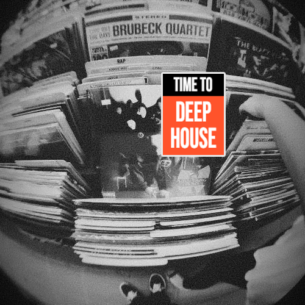
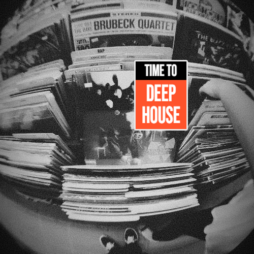

LATEST TRACKS
NEWS
 Texto do LinkDOWNLOAD MUSIC
LATEST MIXES
Guilherme Cherubini is a DJ, music producer and co-founder of the Addiction 21 Records, a label that emphasizes the aspects of deep house, minimal and house music.
LATEST TRACKS
NEWS
 Texto do LinkDOWNLOAD MUSIC
LATEST MIXES